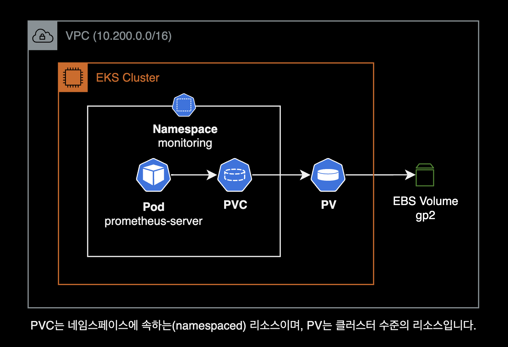
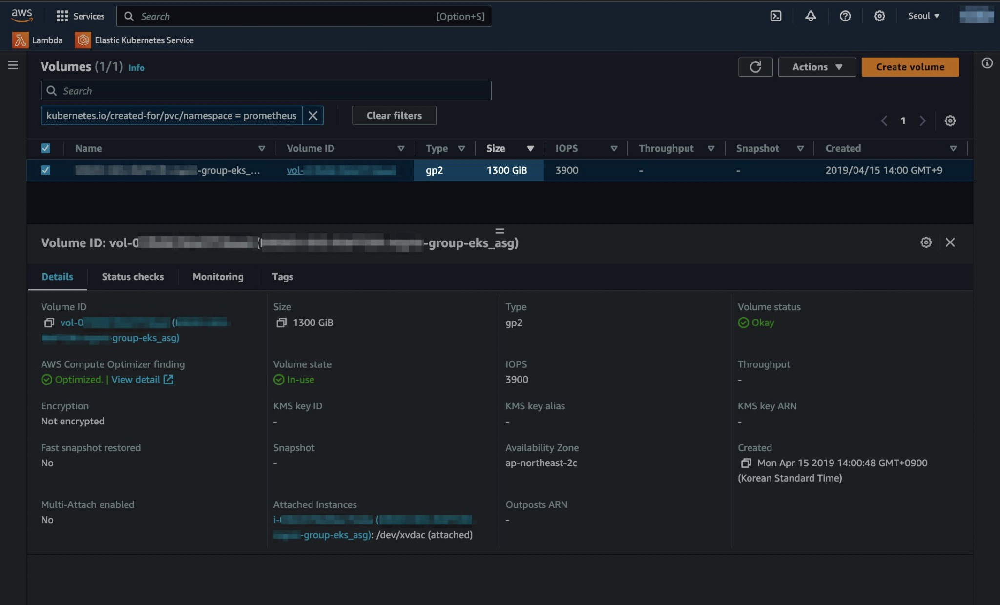

Extend Prometheus PV
개요
Prometheus Server의 PersistentVolume 용량 Full로 인한 트러블슈팅 가이드
환경
EKS 클러스터
- EKS v1.24 (x86_64)
- Prometheus v2.9.2 : helm chart로 설치
- EKS 클러스터에 EBS CSI Driver가 미리 설치되어 있는 환경
증상
Prometheus Server가 헬름 차트를 사용해서 설치되어 있습니다.
$ helm list -n monitoring
NAME NAMESPACE REVISION UPDATED STATUS CHART APP VERSION
prometheus monitoring 208 2022-11-10 01:49:12.126086095 +0000 UTC deployed prometheus-8.11.4 2.9.2
Prometheus Server 파드 상태를 확인합니다.
$ kubectl get pod -n monitoring
NAME READY STATUS RESTARTS AGE
prometheus-server-79f8d6c487-j6ppl 1/2 CrashLoopBackOff 6 (40s ago) 6m20s
Prometheus Server Pod에 CrashLoopBackOff가 발생하여 파드가 6번 재시작되었고 정상적으로 Running 되지 않았습니다.
CrashLoopBackOff이 발생하는 원인을 파악하기 위해 Prometheus Server 파드의 로그를 확인합니다.
$ kubectl logs -f prometheus-server-79f8d6c487-j6ppl -n monitoring
prometheus-server level=warn ts=2023-11-10T02:23:05.250507661Z caller=wal.go:116 component=tsdb msg="last page of the wal is torn, filling it with zeros" se
gment=/data/wal/00045436
prometheus-server level=info ts=2023-11-10T02:23:05.250988832Z caller=main.go:489 msg="Stopping scrape discovery manager..."
prometheus-server level=info ts=2023-11-10T02:23:05.251009173Z caller=main.go:503 msg="Stopping notify discovery manager..."
prometheus-server level=info ts=2023-11-10T02:23:05.251017691Z caller=main.go:525 msg="Stopping scrape manager..."
prometheus-server level=info ts=2023-11-10T02:23:05.251025558Z caller=main.go:499 msg="Notify discovery manager stopped"
prometheus-server level=info ts=2023-11-10T02:23:05.251062604Z caller=main.go:485 msg="Scrape discovery manager stopped"
prometheus-server level=info ts=2023-11-10T02:23:05.251099842Z caller=manager.go:736 component="rule manager" msg="Stopping rule manager..."
prometheus-server level=info ts=2023-11-10T02:23:05.251135632Z caller=manager.go:742 component="rule manager" msg="Rule manager stopped"
prometheus-server level=info ts=2023-11-10T02:23:05.251149365Z caller=notifier.go:521 component=notifier msg="Stopping notification manager..."
prometheus-server level=info ts=2023-11-10T02:23:05.251149379Z caller=main.go:519 msg="Scrape manager stopped"
prometheus-server level=info ts=2023-11-10T02:23:05.251165003Z caller=main.go:679 msg="Notifier manager stopped"
prometheus-server level=error ts=2023-11-10T02:23:05.251350945Z caller=main.go:688 err="opening storage failed: zero-pad torn page: write /data/wal/00045436: no space left on device"
Stream closed EOF for monitoring/prometheus-server-79f8d6c487-j6ppl (prometheus-server)
opening storage failed: zero-pad torn page: write /data/wal/00045436: no space left on device" 에러에 주목합니다.
메트릭을 저장하는 볼륨인 /data에 공간이 부족하여 Prometheus가 정상적으로 뜨지 못하는 걸 알 수 있습니다.
원인
디스크 공간 부족
일반적으로 Prometheus Server Pod는 /data 파일시스템에 시계열 데이터베이스(TSDB) 형태로 메트릭을 저장합니다.
해당 파일시스템에 연결된 Persistent Volume(실체는 EBS Volume)이 사용률 100%로 여유 공간이 없었습니다.
아래는 문제가 발생헀던 Prometheus 인프라 구성입니다.

해결방법
- 헬름 차트에서 PV 용량을 늘린다.
prometheus헬름 차트 재배포
주의사항
EBS Volume 용량 변경 시 제한 사항
EBS 볼륨(Persistent Volume)의 용량을 변경한 후, 또 다시 변경하려면 6시간을 기다려야 다시 변경할 수 있습니다.
볼륨을 수정한 후 동일한 볼륨에 추가 수정 사항을 적용하려면 먼저 볼륨이 in-use 또는 available 상태가 되도록 6시간 이상 기다려야 합니다. 이를 때로 휴지 기간이라고도 합니다.
자세한 사항은 EBS 공식문서 볼륨 수정 시 요구 사항의 제한 사항 문서를 참고하세요.
상세 조치방법
Prometheus Server Pod가 사용하는 Persistent Volume의 정보를 확인합니다.
$ kubectl get pv -n monitoring
...
pvc-6d42404c-5f3b-11e9-9126-0a883d273378 1124Gi RWO Retain Bound monitoring/prometheus-server gp2 4y209d
1124Gi 용량의 Persistent Volume이 Prometheus Server 파드의 /data 경로에 붙어있습니다.
클러스터에서 사용 가능한 StorageClass 목록을 확인합니다.
$ kubectl get sc
NAME PROVISIONER RECLAIMPOLICY VOLUMEBINDINGMODE ALLOWVOLUMEEXPANSION AGE
gp2 kubernetes.io/aws-ebs Delete WaitForFirstConsumer true 3y247d
gp3 (default) ebs.csi.aws.com Delete WaitForFirstConsumer true 156d
용량을 늘리기 전에 StorageClass의 상세 설정을 확인합니다.
$ kubectl describe storageclass gp2
Name: gp2
IsDefaultClass: No
Annotations: ...
Provisioner: kubernetes.io/aws-ebs
Parameters: fsType=ext4,type=gp2
AllowVolumeExpansion: True
MountOptions: <none>
ReclaimPolicy: Delete
VolumeBindingMode: WaitForFirstConsumer
Events: <none>
AllowVolumeExpansion 값이 true이면 용량 변경을 허용하고 있다는 의미입니다.
StorageClass에서 AllowVolumeExpansion 설정이 false인 경우 다음 명령어를 사용해서 허용하도록 변경할 수 있습니다.
중요:
PersistentVolume 용량 변경을 진행하기 전에 현재 자신이 위치한 EKS 클러스터에 EBS CSI Driver가 설치되어 있는지 미리 확인하세요.
kubectl patch storageclass <SC> -p '{"allowVolumeExpansion": true}'
<SC> 값을 Prometheus Server 볼륨에서 사용중인 StorageClass 이름으로 변경해줍니다.
Size 변경을 허용하도록 gp2 StorageClass 설정을 변경합니다.
kubectl patch storageclass gp2 -p '{"allowVolumeExpansion": true}'
allowVolumeExpansion 값이 true로 설정되면 볼륨 사이즈 변경이 허용된 상태입니다.
이제 실제 Persistent Volume의 사이즈를 변경합니다.
Prometheus를 헬름 차트로 설치한 경우, values.yaml의 server.persistentVolume.size 값으로 Persistent Volume의 용량을 지정할 수 있습니다.
# values.yaml for prometheus chart
server
...
persistentVolume:
## If true, Prometheus server will create/use a Persistent Volume Claim
## If false, use emptyDir
##
enabled: true
## Prometheus server data Persistent Volume access modes
## Must match those of existing PV or dynamic provisioner
## Ref: http://kubernetes.io/docs/user-guide/persistent-volumes/
##
accessModes:
- ReadWriteOnce
## Prometheus server data Persistent Volume annotations
##
annotations: {}
## Prometheus server data Persistent Volume existing claim name
## Requires server.persistentVolume.enabled: true
## If defined, PVC must be created manually before volume will be bound
existingClaim: ""
## Prometheus server data Persistent Volume mount root path
##
mountPath: /data
## Prometheus server data Persistent Volume size
##
- size: 1124Gi
+ size: 1300Gi
## Prometheus server data Persistent Volume Storage Class
## If defined, storageClassName: <storageClass>
## If set to "-", storageClassName: "", which disables dynamic provisioning
## If undefined (the default) or set to null, no storageClassName spec is
## set, choosing the default provisioner. (gp2 on AWS, standard on
## GKE, AWS & OpenStack)
##
# storageClass: "prometheus"
## Subdirectory of Prometheus server data Persistent Volume to mount
## Useful if the volume's root directory is not empty
##
subPath: ""
기존에 1124Gi이던 PV 용량을 1300Gi로 변경했습니다.
EBS CSI Driver에 의해 실제 EBS Volume의 용량도 PV 설정과 동일하게 자동 변경됩니다.

이 뒷단의 보이지 않는 EBS 볼륨을 변경하고 컨트롤하는 작업들은 EKS 클러스터에 설치된 EBS CSI Driver가 수행합니다.
변경된 사항을 적용하기 위해 헬름 업그레이드를 실행합니다.
helm upgrade prometheus . \
-n monitoring \
-f values_example.yaml \
--wait
PV 사이즈가 늘어났는지와 Prometheus Server가 PVC를 통해 볼륨과 잘 연결되어 있는지 확인합니다.
$ kubectl get pv,pvc -n monitoring
NAME CAPACITY ACCESS MODES RECLAIM POLICY STATUS CLAIM STORAGECLASS REASON AGE
pvc-6d42404c-5f3b-11e9-9126-0a883d273378 1300Gi RWO Retain Bound monitoring/prometheus-server gp2 4y209d
NAME STATUS VOLUME CAPACITY ACCESS MODES STORAGECLASS AGE
persistentvolumeclaim/prometheus-server Bound pvc-6d42404c-5f3b-11e9-9126-0a883d273378 1300Gi RWO gp2 4y124d
PV 용량이 1124Gi에서 1300Gi로 늘어난 걸 확인할 수 있습니다.
Prometheus Server가 재시작되고 용량을 확보했기 때문에 정상적으로 Running 상태로 전환된 걸 확인할 수 있습니다.
$ kubectl get pod -n monitoring
NAME READY STATUS RESTARTS AGE
...
prometheus-server-5cbd97c96-dwk2d 2/2 Running 2 (22m ago) 22m
실제 파드에 붙은 /data 파일시스템의 용량도 늘어났는지 확인합니다.
$ kubectl exec -it -n monitoring prometheus-server-5cbd97c96-dwk2d -c prometheus-server -- df -hT /data
Filesystem Type Size Used Available Use% Mounted on
/dev/xvdac ext4 1.2T 1.1T 178.4G 86% /data
/data 파일시스템의 용량이 늘어난 걸 확인할 수 있습니다.
Prometheus Serve 파드가 구동될 때 특이한 로그가 없고 이전에 발생했던 no space left on device 에러 로그는 사라졌습니다.
$ kubectl logs -f prometheus-server-5cbd97c96-dwk2d -n monitoring
prometheus-server level=info ts=2023-11-10T02:34:11.273179852Z caller=head.go:526 component=tsdb msg="head GC completed" duration=2.792894391s
prometheus-server level=info ts=2023-11-10T02:34:14.80639232Z caller=head.go:573 component=tsdb msg="WAL checkpoint complete" first=45433 last=45435 duratio
n=3.533157972s
prometheus-server level=info ts=2023-11-10T02:34:26.200791468Z caller=head.go:526 component=tsdb msg="head GC completed" duration=1.37427812s
prometheus-server level=info ts=2023-11-10T02:34:29.854613706Z caller=head.go:573 component=tsdb msg="WAL checkpoint complete" first=45436 last=45437 durati
on=3.653761294s
prometheus-server level=info ts=2023-11-10T02:34:40.374378292Z caller=head.go:526 component=tsdb msg="head GC completed" duration=772.413383ms
prometheus-server level=info ts=2023-11-10T02:34:43.399665116Z caller=head.go:573 component=tsdb msg="WAL checkpoint complete" first=45438 last=45439 durati
on=3.025229582s
prometheus-server level=info ts=2023-11-10T02:34:54.856973245Z caller=head.go:526 component=tsdb msg="head GC completed" duration=832.8964ms
prometheus-server level=warn ts=2023-11-10T02:35:05.460706041Z caller=scrape.go:835 component="scrape manager" scrape_pool=kubernetes-service-endpoints targ
et=http://xx.xxx.xx.xx:8080/metrics msg="append failed" err="not found"
prometheus-server level=info ts=2023-11-10T02:35:06.038713935Z caller=head.go:526 component=tsdb msg="head GC completed" duration=1.256901115s
prometheus-server level=info ts=2023-11-10T02:35:19.522476356Z caller=head.go:526 component=tsdb msg="head GC completed" duration=2.344829434s
prometheus-server level=info ts=2023-11-10T02:35:32.539459371Z caller=head.go:526 component=tsdb msg="head GC completed" duration=945.127937ms
prometheus-server level=info ts=2023-11-10T03:00:13.381164789Z caller=head.go:526 component=tsdb msg="head GC completed" duration=950.601452ms
prometheus-server level=info ts=2023-11-10T03:00:16.354503976Z caller=head.go:573 component=tsdb msg="WAL checkpoint complete" first=45440 last=45442 durati
on=2.968652344s
참고자료
Using kubectl patch to modify existing Kubernetes objects
Kubernetes를 사용하여 Persistent Volume 크기 조정
Amazon EBS CSI Driver
볼륨 수정 시 요구 사항